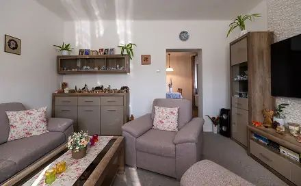

Previously known advert / cross-list
Zlevněno prodej domu 90 m² s pozemkem 1 071 m² Za Ještěrkou, Ostrava - Bartovice 9 300 000 Kč
Zlevněno prodej domu 90 m² s pozemkem 1 071 m² Za Ještěrkou, Ostrava - Bartovice 9 300 000 Kč
Not stated → 9,300,000 CZK
Original advert ↗